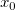
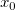

Ein entsprechendes Video sehen Sie unter: X/Y-Werte nach der Anpassung suchen.
Ein entsprechendes Video sehen Sie unter: X/Y-Werte nach der Anpassung suchen.
 Ein entsprechendes Video sehen Sie unter: X/Y-Werte nach der Anpassung suchen.
Ein entsprechendes Video sehen Sie unter: X/Y-Werte nach der Anpassung suchen.
Die Tabelle X/Y suchen erlaubt es Ihnen, aus dem Fit, den Sie an den Daten ausgeführt haben, entweder einen abhängigen Variablenwert bei gegebenem unabhängigen Variablenwert oder einen unabhängigen Variablenwert bei gegebenem abhängigen Variablenwert zu erhalten.
Nach der Anpassung finden Sie ein neues Arbeitsblatt mit einem Namen wie *XvonYfinden* (oder *YvonXfinden*). Geben Sie die Y- (oder X-) Werte in die erste Spalte in dem neuen Blatt ein. Die X- (oder Y-) Werte werden anschließend automatisch berechnet.
Die Steuerung der Ausgabeoptionen variiert je nach Anpassungshilfsmittel. Bei der linearen Anpassung ist beispielsweise ein Kontrollkästchen für die Ausgabe von X von Y suchen aktiviert, und ein zweites Kontrollkästchen erlaubt die Berechnung von UEG- und OEG-Werten bei einem Konfidenzniveau von 95% für Werte von X/Y suchen. Sie können im Hilfsmittel der Nichtlinearen Anpassung (NLFit) die zusätzlichen X/Y-Spalten mit Hilfe einer Auswahlliste festlegen. Gibt es mehrere Lösungen, werden diese Werte in den zusätzlichen Spalten hinzugefügt. Im Modell zum Beispiel kann es zwei X-Werte für einen gegebenen Y-Wert geben. Sie können die Anzahl der X-Spalten als 2 im Zweig X von Y finden festlegen.
Im Allgemeinen läuft Y von X finden schneller als X von Y finden. Bei der Option Y von X finden verwendet Origin die Fit-Parameterwerte zum Berechnen der Y-Werte direkt im Modell. Wenn Sie allerdings X von Y finden möchten, ist Origin nicht in der Lage eine X~Y-Gleichung automatisch abzuleiten. Die Näherungswerte müssen durch Iterationen berechnet werden. Im Folgenden wird der verwendete Algorithmus näher erläutert:
Origin erstellt zunächst eine einheitliche lineare Kurve. Der Bereich, in den ein gegebener Y-Wert fällt, wird gesucht. Zum Beispiel kann der Y-Wert eines gegebenen Punkts in den Bereich [yn, yn+1] fallen. Wir wissen, dass der X-Wert innerhalb des Bereichs [xn, xn+1] liegen sollte. Anschließend wird ein neuer Y-Wert y’ berechnet, der X = (xn + xn+1) / 2 entspricht. Mit dem berechneten y’ können wir den Bereich [yn, yn+1] in zwei Unterbereiche, [yn, y’] und [y’, yn+1], teilen. Danach werden y und y’ verglichen, um herauszufinden, in welchem Unterbereich y liegt. Diese Schritte werden solange wiederholt, bis der Unterschied zwischen y und y’ innerhalb einer gewissen Toleranz  liegt.
liegt.
Beachten Sie, dass die Iterationsmethode für X von Y finden verwendet wird. Sie können die X-Werte für Y-Werte nur innerhalb des Quellendatenbereichs finden.
Bei der Suche von X von Y oder Y von X können Sie das 95%-Konfidenzintervall berechnen.
 ergibt sich ein X-Wert von . innerhalb des Messbereichs liegt, durch Interpolation, dann wird die Standardabweichung in gegeben durch
ergibt sich ein X-Wert von . innerhalb des Messbereichs liegt, durch Interpolation, dann wird die Standardabweichung in gegeben durch die angepasste Steigung,
die angepasste Steigung,  die Anzahl der Punkte, die Stichprobenvarianz ist und
die Anzahl der Punkte, die Stichprobenvarianz ist und  sowie
sowie  die Werte des Mittelwerts für die X- bzw. Y-Daten sind. außerhalb des Messbereichs liegt, durch Extrapolation, dann wird die Standardabweichung in gegeben durch
die Werte des Mittelwerts für die X- bzw. Y-Daten sind. außerhalb des Messbereichs liegt, durch Extrapolation, dann wird die Standardabweichung in gegeben durch\times 100\%") wird berechnet mit:
wird berechnet mit:![[x_0 - t_{(\frac{\alpha}{2},n-2)}s_{x_0}, x_0 + t_{(\frac{\alpha}{2},n-2)}s_{x_0}]](../images/Finding_Y_X_from_X_Y_Standard_Curves/math-8a707c459e02cab0f9b9c0d13e2f608d.png "[x_0 - t_{(\frac{\alpha}{2},n-2)}s_{x_0}, x_0 + t_{(\frac{\alpha}{2},n-2)}s_{x_0}]")
}") der kritische t-Wert für
der kritische t-Wert für  (einseitig) und n-2 Freiheitsgrade ist.
(einseitig) und n-2 Freiheitsgrade ist.